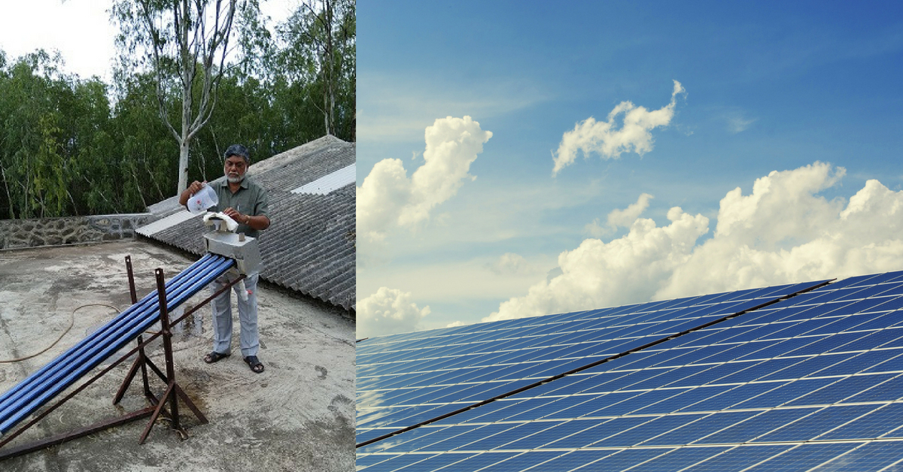

Project : Water fetching aid for the elderly in the rural/terrain areas
The Context
The Context :
To study and understand the existing product or similar products in the market, the product scenario, its users, and the pros and cons of the product as experienced by them. This is generally done by studying the available data and through interaction with all the users and stakeholders.
- India is the second most populous country in the world, with more than 1 billion citizens. The scale of need in India is immense, making India the concentrated center of the global water and sanitation crisis. About 26% of India’s population practices open defecation, a critical factor contributing to water-borne illness, stunting, and death.
- Chemical contamination of water, mainly through fluoride and arsenic, is present in 1.96 million dwellings. Excess fluoride in India may be affecting tens of millions of people across 19 states, while equally worryingly, excess arsenic may affect up to 15 million people in India, according to the World Health Organization (WHO).
- Data collected from the Ministry of Drinking Water and Sanitation states that 45,053 villages had access to piped water and handpumps by the end of 2016-17, accounting for 64.19 per cent of India. Almost 19,000 villages across the country still do not receive regular water supply.
Here are some potential Solutions for the stress relief of older peoples carriny water :
-
Solar Water Purifier
- The solar water purifier, developed by scientists at the Nimbkar Agricultural Research Institute (NARI) at Phaltan in Maharashtra, does not require electricity and does not waste water.
- It is made up of four tubular solar water heaters attached to a manifold. The tubes have special coating to absorb maximum sunlight. They are like a thermos flask with vacuum between outer and inner tubes.
- Non-potable water is filled in the tubes after filtering with four-layered cotton cloth. The water gets heated in the stagnation mode by solar energy, making it potable.
-
Pros :
- Runs without electricity
- Doesn’t waste water
-
Cons :
- Does not remove or reduce total dissolved solids like Arsenic or other salts
- Total cost is around Rs. 3000
-
Portable water purifier bottle

- Provision of clean drinking water supply in rural India continues to be an enormous challenge. Elderly in the rural parts of India have very less access to clean and filtered drinking water. Due to the consumption of contaminated water, they acquire waterborne diseases and a plethora of other illnesses. So with an aim to make clean drinking water accessible to them filters using natural substances for filtration come to the rescue.
- Nano clay particles form the crux of the Terafil candle. The pores in the candles are smaller than the Nano-sized microbes like bacteria and virus, thus enabling the candles to filter the pathogens in the top layer itself, thus enabling the clean, good water to percolate and pass through it and get dropped in the bottom container. The capillary holes formed within the candle structure are so complex that it does not allow turbid materials, other waste solids, minerals and metal complexes to flow outside its structure.
- Therefore, the murky water which also has iron particles and pathogens gets filtered and clean water flows down due to gravitational pull and gets collected in the bottom container.
-
Pros :
- Works without Electricity
- Affordable
- Easy to set up
- Uses Natural material for filtration
-
Cons :
- Weighs around 4 kg. Hence, difficult for elderly to carry it with them. A more lightweight filter would make this filter easy to carry